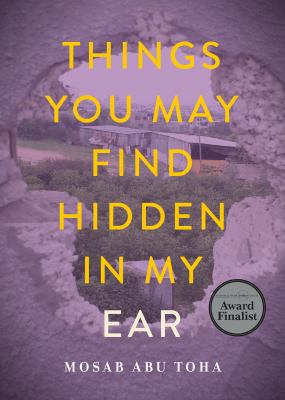

Mosab Abu Toha, Things You May Find Hidden in My Ear (City Lights Books, 2022)Michael Scott Baumann, The Shortest History of Israel and Palestine: From Zionism to Intifadas and the Struggle for Peace (The Experiment, 2023)Joel Beinin and Lisa Hajjar, "Palestine, Israel and the Arab-Israeli Conflict,” (Middle East Research and Information Project (MERIP), 2014)Rashid Khalidi, The Hundred Years' War on Palestine (Picador, 2021)Vincent Lemire et al, Jerusalem: History of a Global City (U. of California Press, 2022)Miko Peled, The General's Son: Journey of an Israeli in Palestine (Just World Books, 2016)Derek Penslar, Zionism: An Emotional State (Rutgers University Press, 2023)Mosab Abu Toha, Things You May Find Hidden in My Ear (City Lights Books, 2022)Mosab Abu Toha, Things You May Find Hidden in My Ear (City Lights Books, 2022)Mosab Abu Toha, Things You May Find Hidden in My Ear (City Lights Books, 2022)Mosab Abu Toha, Things You May Find Hidden in My Ear (City Lights Books, 2022)